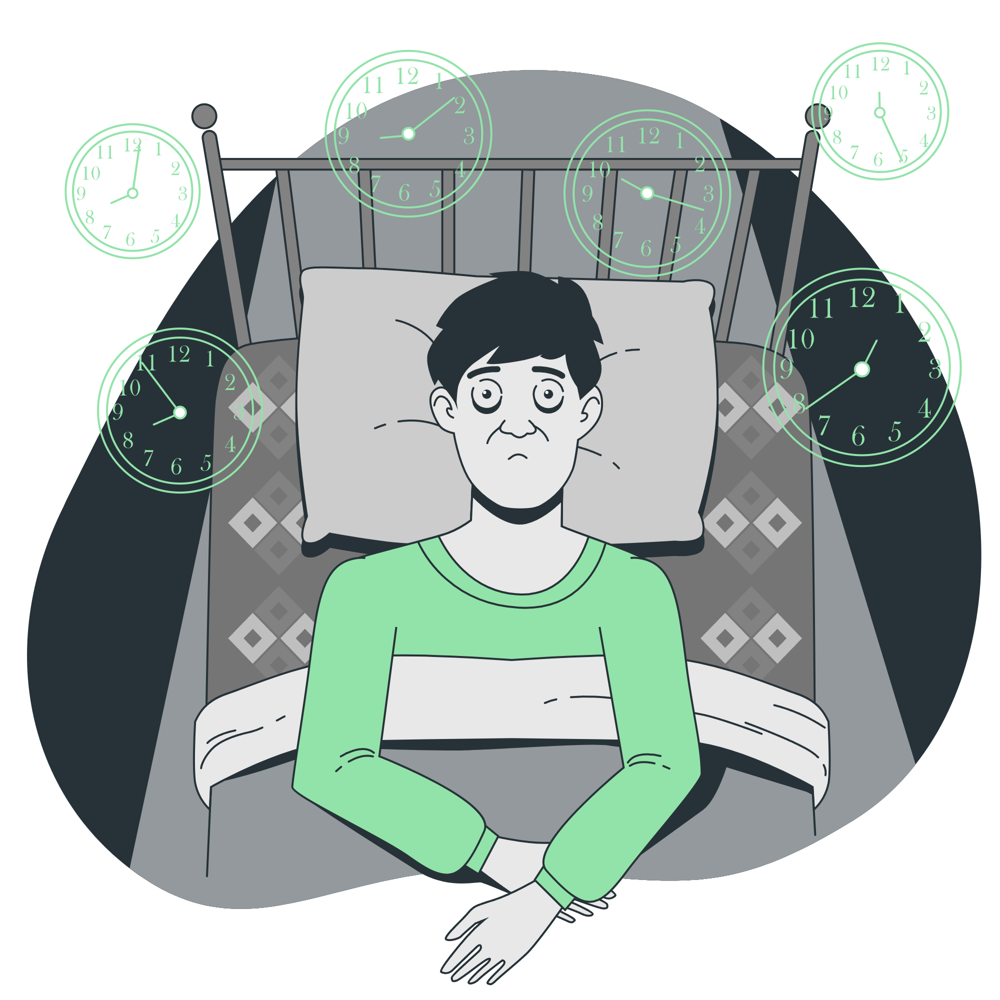

Pequenos habitos,
grandes mudanças!
Confira algumas dicas e conteúdos que podem te ajudar a cuidar melhor da sua mente e do seu dia a dia.
Qualidade do sono
Entenda como o sono afeta seu humor, concentração e produtividade, e veja dicas para melhorar sua rotina.

Técnicas de relaxamento
Respiração, meditação e mindfulness para acalmar a mente e reduzir a tensão.

Sinais de alerta
Saiba identificar quando é hora de buscar ajuda profissional e não ignore os sinais.